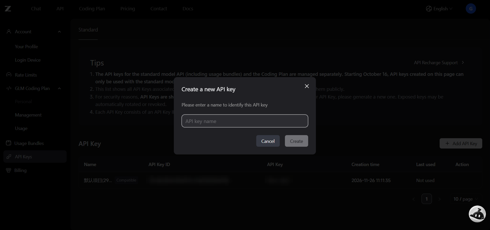
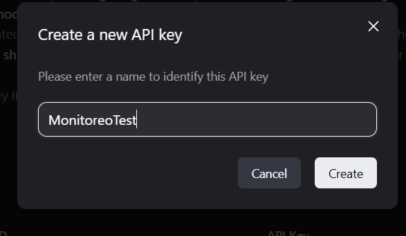
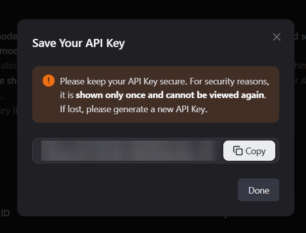

Cómo usar GLM con tu propia clave
Asistente de MonitorEO · versión local · English below
El asistente usa primero el modelo de MonitorEO. Si no responde, pasa a GLM, los modelos de lenguaje de Z.ai (Zhipu), y si tampoco responde, al modelo de este ordenador (Ollama). Para GLM hace falta una clave de su API. El asistente trae una clave de respaldo, compartida, pero con tu propia clave tienes tus propios límites y no compites con otros usuarios.
1. Crear la clave (unos minutos, gratis)
- Entra en z.ai/model-api y regístrate o inicia sesión.
- Abre la página de claves: z.ai/manage-apikey/apikey-list.
- En la pestaña Standard (no en GLM Coding Plan: esas claves son de otro servicio y no funcionan con
el asistente), pulsa Add API Key, arriba a la derecha de la lista.

La página API Keys de Z.ai, después de pulsar Add API Key. - Escribe un nombre para reconocerla (por ejemplo
MonitoreoTest) y pulsa Create.
El nombre solo sirve para distinguirla en la lista. - Pulsa Copy y luego Done. Z.ai la muestra entera solo esta vez: si la pierdes, crea otra.

La clave aparece en el recuadro (aquí, difuminada). No la compartas ni la publiques.
2. Ponerla en el asistente
- Abre Ajustes (arriba).
- En Modelo de lenguaje, elige Automático (recomendado) o GLM.
- Pega la clave en el campo de GLM y pulsa Guardar. Debe aparecer «✓ tu clave».
- Deja el modelo
glm-4.7-flash. Si está saturado (pasa a menudo con los gratuitos), el asistente prueba sologlm-4.5-flash, y al revés.
La clave se guarda solo en este ordenador (en MonitorEO/assistant.json), no se muestra en la página
y no va en los registros que envía «Enviar los registros». Con Quitar mi clave se borra.
3. Límites de uso
- Coste: GLM-4.7-Flash y GLM-4.5-Flash cuestan 0 en la tabla de precios de Z.ai. No hace falta recargar saldo ni contratar un plan para usarlos.
- Peticiones: al ser gratuitos, Z.ai limita cuántas peticiones acepta a la vez y por minuto. Z.ai no publica en su documentación un límite diario fijo para estos modelos. Los límites de tu cuenta se ven, con la sesión iniciada, en z.ai/manage-apikey/rate-limits.
- Cuánto gasta una pregunta: cada pregunta al asistente usa entre 1 y 8 peticiones, una por cada paso del modelo (buscar la zona, elegir la variable, calcular…).
- Si se llega al límite o el modelo está saturado (error 429): el asistente prueba la clave de respaldo, luego el otro modelo gratuito de GLM con cada clave y, si nada responde, el modelo de este ordenador. Basta con esperar un minuto y volver a preguntar.
4. Qué ve Z.ai
Con GLM, el texto de la conversación y de tus documentos va a Z.ai, como con el modelo de MonitorEO va a Google o Anthropic. Los resultados (mapas, series, tablas) no salen de tu ordenador ni de Google Earth Engine: el modelo nunca los ve.
How to use GLM with your own key
MonitorEO assistant · local version · Español arriba
The assistant uses the model of MonitorEO first. If it does not answer, it goes on to GLM, the language models of Z.ai (Zhipu), and then to the model of this computer (Ollama). GLM needs a key of its API. The assistant has a shared backup key, but your own key gives you your own limits.
- Sign up or sign in at z.ai/model-api.
- On z.ai/manage-apikey/apikey-list, tab Standard (not a Coding Plan key), press Add API Key, give it a name, press Create, then Copy and Done: it is shown only once (see the pictures above).
- In the assistant: Settings → Language model → Automatic or GLM, paste the key and press Save.
Limits. GLM-4.7-Flash and GLM-4.5-Flash are free of charge. Z.ai limits how many requests it accepts at a time and per minute, and its documentation does not publish a fixed daily limit for them: see those of your account at z.ai/manage-apikey/rate-limits. Each question to the assistant takes 1 to 8 requests. At the limit or when the model is overloaded (error 429) the assistant tries the backup key, then the other free model of GLM, and then the model of this computer; wait a minute and ask again.
The key stays on this computer (MonitorEO/assistant.json) and is not in the logs. With GLM, the text
of the conversation goes to Z.ai; the results never leave your computer and Earth Engine.